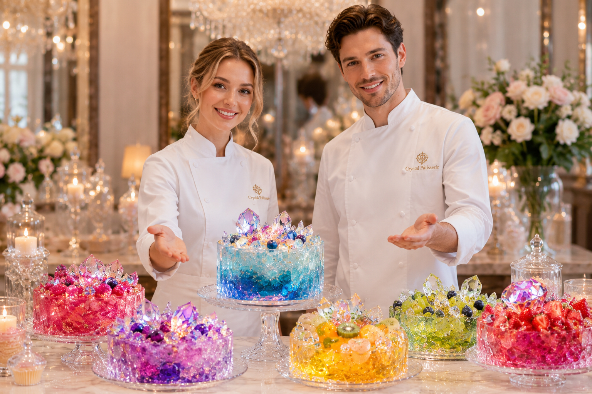
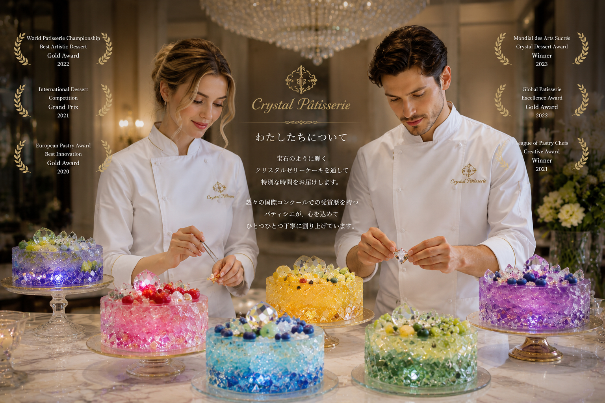

Brand Story

Lumièreとはフランス語で「光」。 宝石のように輝くクリスタルゼリーケーキに、 光を閉じ込めるような美しさを表現したい。
私たちは単なるスイーツではなく、 「食べる芸術作品」を目指しています。
全国の百貨店からも高い評価を受ける 厳選フルーツと、 繊細なパティシエ技術が融合した 唯一無二のクリスタルゼリーケーキです。
Crystal Cake Studio 主宰。 美しいフラワーゼリーと クリスタルゼリーケーキの研究を続け、 全国の百貨店催事や ラグジュアリーイベントでも高い評価を得ています。
「食べる宝石」をテーマに、 一つひとつ手作業で制作しています。

フラワーゼリー制作開始
Crystal Cake Studio 設立
百貨店催事へ出店開始
オンラインレッスン開講